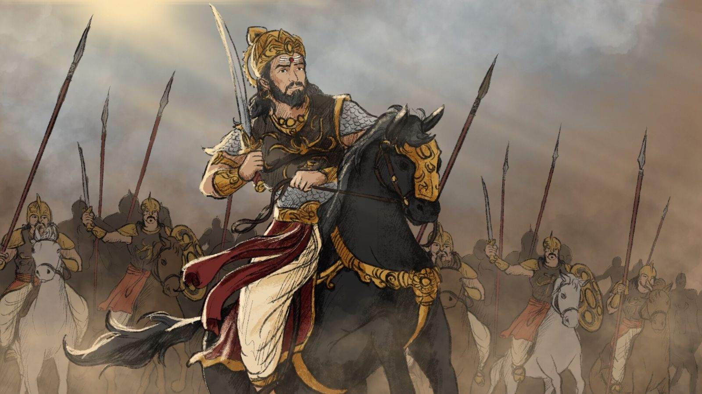
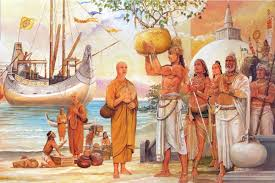
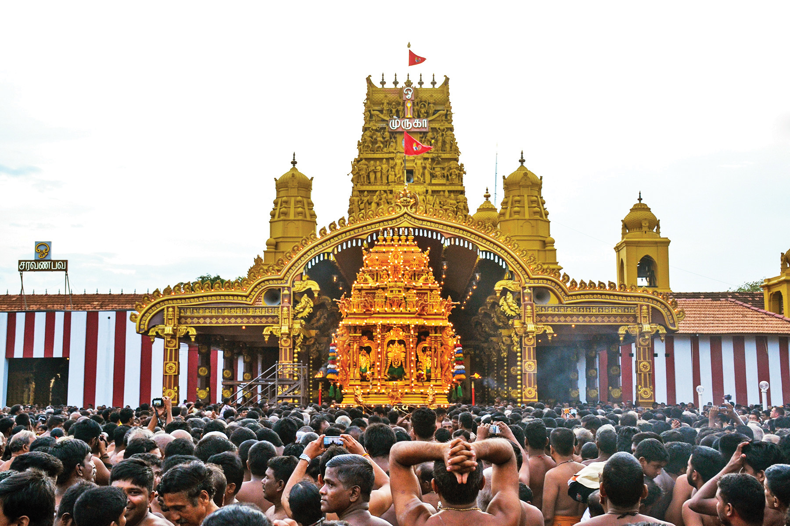
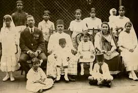

Sri Lanka, often hailed as the "Pearl of the Indian Ocean," is a land of remarkable cultural diversity and depth. Its traditions, spirituality, and artistic expressions have evolved over millennia, shaped by historical events, geographic features, and a harmonious blend of local and foreign influences. This essay delves deeper into the multifaceted dimensions of Sri Lankan culture, enriched with specific examples and nuanced insights.
Historical Roots and Evolution
The history of Sri Lanka spans over 2,500 years, beginning with the arrival of Indo-Aryan settlers from North India around the 6th century BCE. These settlers brought various aspects of Vedic culture, which later evolved into a distinctly Sri Lankan identity. The Mahavamsa, the island's great chronicle, documents key historical events, including the establishment of the Anuradhapura Kingdom, a civilization that pioneered intricate irrigation systems and vast agricultural techniques that bolstered the island’s economy.
The advent of Buddhism in the 3rd century BCE, introduced by Emperor Ashoka's emissaries, marked a pivotal cultural transformation. This era saw the creation of monumental stupas such as the Jetavanaramaya, which remains one of the tallest brick structures in the world, alongside the establishment of monasteries that became centers of learning and philosophy, nurturing a rich intellectual tradition.

Later, the Chola invasions from South India and the subsequent Tamil migrations introduced Dravidian cultural elements, particularly in the northern and eastern regions of the island, where Tamil heritage flourished. The colonial era from 1505 to 1948 brought significant transformations, with Portuguese, Dutch, and British influences evident in Sri Lanka’s legal systems, architecture, language, and even culinary traditions.
Sri Lanka stands as a spiritual melting pot where various religious traditions coexist and have left indelible marks on the cultural landscape:

Buddhism:
The island is home to some of the most sacred Buddhist sites, including the Sri Maha Bodhi in Anuradhapura, which is grown from a sapling of the original Bodhi tree under which Buddha attained enlightenment. This tree symbolizes the deep devotion of Sri Lankan Buddhists. Monastic practices, meditation centers, and vibrant festivals like Vesak, marked by the display of intricately designed lanterns and communal almsgiving, underscore Buddhism's profound influence on daily life and governance.

Hinduism:
The northern city of Jaffna is distinguished by prominent Hindu temples such as the Nallur Kandaswamy Kovil, renowned for its elaborate architecture and grand annual festival involving spectacular chariot processions that attract thousands. Rituals such as firewalking at Kataragama, dedicated to the god Skanda, showcase the blend of Hindu and Buddhist traditions through shared rituals and celebrations.

Islam:
Introduced by Arab traders around the 7th century CE, Islam flourished particularly in coastal areas where trading communities established rich cultural practices. The Jami Ul-Alfar Mosque in Colombo, with its striking red-and-white candy-striped design, stands as a testament to the intricate Islamic architectural influence on Sri Lankan cityscapes.
Christianity:
The Portuguese's arrival brought Roman Catholicism, followed by the Dutch's introduction of Protestantism. Key sites of Christian heritage, such as the St. Anne's Shrine in Talawila and the Dutch Reformed Church in Galle Fort, not only serve as places of worship but also exemplify the stylistic elements of colonial architecture interwoven with local influences.
Sri Lanka’s official languages, Sinhala and Tamil, reflect its historical and cultural complexity, each language serving as a vessel for its respective cultural narratives:
Ancient Literature:
The island boasts a rich literary tradition dating back centuries, with notable works such as the Kavsilumina, a 13th-century Sinhala poem rich in allegory and moral teachings, alongside Tamil devotional hymns composed by saints like the Nayanmars, which reflect deep spiritual and philosophical insights.
Modern Literature:
Contemporary writers like Martin Wickramasinghe and Shyam Selvadurai have contributed significantly to Sri Lankan literature, tackling themes of identity, diaspora, and socio-political challenges. Wickramasinghe’s novel "Gamperaliya" offers a poignant depiction of the transformation of rural life, addressing the tensions between tradition and modernity during a period of rapid change in the early 20th century.
Sri Lanka’s artistic traditions are diverse and deeply rooted in its cultural tapestry:
Kandyan Dancing:
Recognized by UNESCO, this classical dance form is intimately tied to religious rituals, characterized by elaborate movements, ritualistic gestures, and vibrant costumes adorned with intricate jewelry. The Perahera of Kandy, an annual festival that features Kandyan dancers alongside caparisoned elephants, showcases not only the dance but also the cultural significance of devotion and celebration of Buddhist heritage.
Masks and Puppetry:
The Ambalangoda region is famed for Raksha (demon) masks, traditionally used in exorcism rituals. The region’s puppet theater art, utilizing these masks in storytelling performances, highlights the cultural narratives and folklore of Sri Lanka, captivating audiences with its vivid imagery and dynamic performance styles.
Batik Art:
Drawing inspiration from Indonesian techniques, Sri Lankan batik is an intricate form of textile art involving wax-resist dyeing. Craftsmanship often reflects local flora, fauna, and cultural motifs, encapsulating the vibrant heritage of the island and demonstrating the skilled artisans' creativity.
Sri Lankan architecture showcases a harmonious blend of Indigenous ingenuity and foreign influences:
Ancient Marvels:
The Sigiriya Rock Fortress, a UNESCO World Heritage Site, exemplifies Sri Lankan engineering prowess. This ancient citadel, with its breathtaking frescoes of celestial maidens, intricate water gardens, and innovative hydraulic systems, reflects the advanced artistic and engineering capabilities of the time and embodies the spiritual connection between nature and culture.
Colonial Heritage:
The Dutch Hospital in Colombo, which has been repurposed into a modern shopping and dining complex, preserves the aesthetics of colonial architecture, showcasing the historical interplay of cultural influences over centuries.
Vernacular Styles:
Traditional homes often feature inner courtyards, terracotta roofs, and intricate wooden carvings, showcasing an emphasis on natural ventilation and craftsmanship that align with sustainable living practices.
Sri Lanka’s festival calendar is a reflection of its cultural diversity, with each celebration offering a glimpse into the island’s rich traditions:
Sinhala and Tamil New Year:
Celebrated in April, this festival features unique customs such as the ceremonial preparation of traditional sweets, the anointing of new crops, and the lighting of oil lamps to welcome prosperity. Families gather to partake in rituals that symbolize renewal, reconciliation, and the sharing of joy.
Vesak Poya:
Observed in May, Vesak commemorates the birth, enlightenment, and passing of the Buddha. Streets come alive with illuminated pandals (decorative arches) displaying scenes from the Buddha's life, while devotees engage in acts of charity, reflective practices, and communal prayers.
Esala Perahera:
One of Sri Lanka’s grandest festivals held in Kandy, this event celebrates the Sacred Tooth Relic of the Buddha. The pageantry features a colorful procession of dancers, drummers, and lavishly adorned elephants, illustrating centuries of cultural heritage and devotion.
Deepavali:
The Hindu festival of lights, celebrated predominantly by the Tamil community, encapsulates the victory of light over darkness with families decorating their homes with oil lamps, indulging in festive foods, and participating in religious rituals at temples.
Sri Lanka's culture, steeped in rich history and vibrant traditions, serves not only as a testament to its resilience but also as a celebration of its diverse heritage. Each facet of this island nation, from its arts and architecture to its festivals and spiritual practices, narrates a story of a people deeply connected to their land and each other.

.jpeg)
.jpeg)
.jpeg)
.jpeg)
.jpeg)